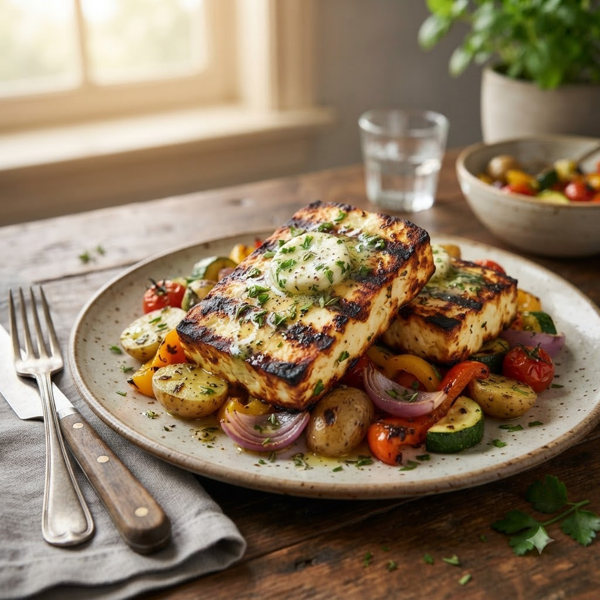

Paneer Steaks with Herb Butter

Paneer Steaks with Herb Butter
Airfryer – Grill 200°C 12 min — Serves 2
Gluten-Free • Vegetarian • High-Protein • Everyday
Prep ahead: Press paneer between paper towels for 10 minutes to remove excess moisture before marinating.
Ingredients
- 300g paneer, cut into 4 thick slabs
- 1 tbsp oil
- 1/2 tsp smoked paprika
- 1/2 tsp garlic (lehsun) powder
- Salt & pepper to taste
- 2 tbsp butter, softened
- 1 tbsp chopped mixed herbs (parsley, chives)
- 1/2 clove garlic (lehsun), minced
Method
1Preheat: Preheat the Airfryer to 200°C for 4 minutes before adding the food to the basket.
2Rub paneer slabs with oil, smoked paprika, garlic powder, salt and pepper.
3Mix softened butter with herbs and minced garlic to make a herb butter.
4Arrange paneer in a single layer in the basket.
5Grill at 200°C for 12 minutes, flipping halfway, until edges are golden and lightly charred.
6Top each steak with a spoon of herb butter while hot and serve immediately.